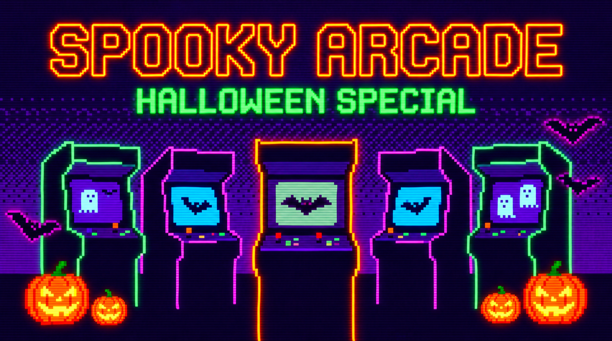

🎲 Dados Malditos
Necesitás sumar 50 puntos en la menor cantidad de tiradas. Puramente suerte, paciencia y manija.

Armamos este espacio para el TP1 mezclando estética retro-arcade con temática de terror. La idea es simple: tres juegos, cero complicaciones y una tabla de récords para ver quién manda. Probá tu suerte con los dados, jugale en contra al reloj en las cartas o fijate cuánto sabés de cine de terror. ¿Te da para entrar al podio?
Necesitás sumar 50 puntos en la menor cantidad de tiradas. Puramente suerte, paciencia y manija.
Enfrentás al crupier con el tiempo en contra. Ojo con colgarte, porque el reloj no perdona.
Preguntas sobre clásicos del cine de terror consumidas en tiempo real desde una API. A ver qué tanto sabés.